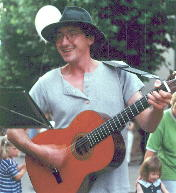

Jan
|
 )
|
Jan Schaaf ist schon früher eingesprungen, wenn wir einen Gitarristen brauchten. Sein einfühlsames Spiel passt recht gut zu uns und Markus spielt sehr gerne mit ihm das „Duelling Banjo". Mit Nefti zusammen spielt er auch gerne seine Mandoline in Harfenform. Nefti hat ihn außerdem mit seiner „Tröt" angesteckt, einem hawaiianischen Natur-Saxophon. Von Beruf ist er „freischaffender" Förster, er übernimmt forstliche Aufträge aller Art. Er hirscht zusammen mit seiner Frau Sabine im Schwarzwald und in anderen Gegenden Deutschlands herum und zählt und begutachtet Bäume und Waldstücke. |